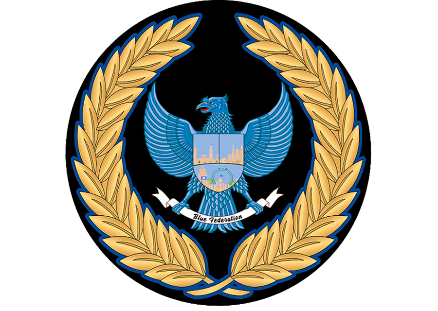
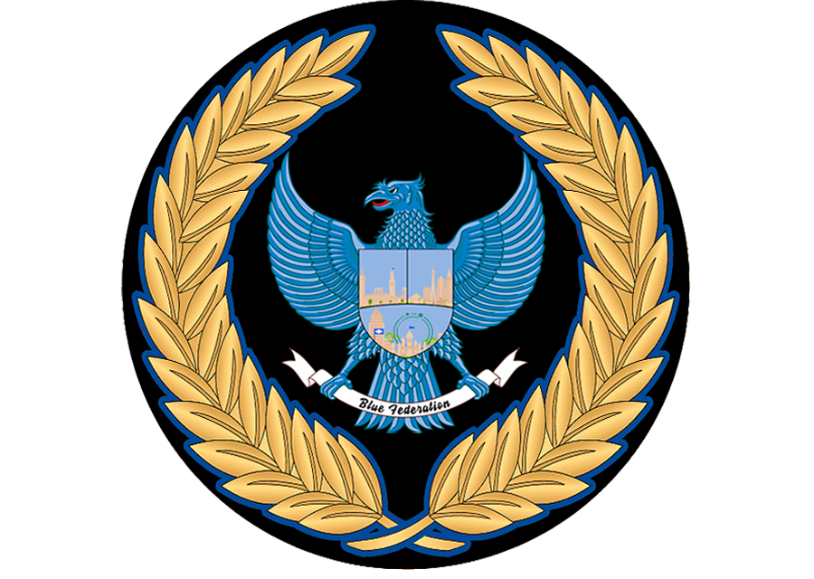

Образовательная программа факультета Права направлена на формирование у студента базового правового мышления, понимания государственных процессов, а также знаний, необходимых для службы в государственных структурах. Факультет Права — ключевой элемент формирования профессионального кадрового резерва для обеспечения правопорядка, справедливости и верховенства закона в Синей Федерации.
Факультет права

1. Лекционный этап (статус "Студент")
На данном этапе студент обязан пройти обязательные лекционные занятия, охватывающие следующие темы:
- Общая структура государства: устройство правительства Синей Федерации, распределение полномочий между ветвями власти, роли Президента, Премьера, Законодательного совета и иных органов.
- Основы законодательства: изучение Конституции, Уголовного, Административного и Процессуального кодексов Синей Федерации.
- Система правосудия: принципы задержания, расследования, судебного рассмотрения, прав и обязанностей участников процесса.
- Этика госслужбы: дисциплина, субординация, соблюдение законности и принципов служения народу.
- Обзор правоохранительных структур: МВД, Федеральное Бюро Расследований, инспекция и их взаимодействие.
После успешного завершения лекционного этапа студент переводится на должность "Практикант".
2. Практический этап (статус "Практикант")
- Студент проходит стажировку в структуре Администрации Президента или любого из троих Домов Правительства.
- Выполняет поручения, наблюдает за процессами работы ведомства, применяет полученные знания в рамках допуска.
- Готовится к финальной итоговой аттестации.
3. Экзамен и допуск к должности
- По завершении практики "Практикант" сдает экзамен по изученному материалу.
- После успешной сдачи экзамена присваивается пятая порядковая должность и статус действующего сотрудника структуры.